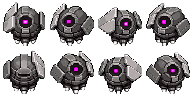
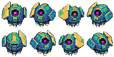
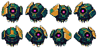

Forge Drifter · eight-direction candidate
Generated master stays out of the game atlas until both mechanical and visual review pass.
Target proof
The runtime ships transparent grayscale plus an exact material-ID map. The recolor proves regions change independently; the green extraction plate is excluded.

1 · grayscale master
2 · exact target IDs
3 · independent recolorGeneration checks
Hard failures block atlas promotion. Visual identity remains a human review.
Semantic material targets
Every mob supports independent seeded materials rather than one flat tint.
Tile + wall adjacency contract
All sixteen north/east/south/west masks must exist before a biome can ship.
Approval ledger
loading…